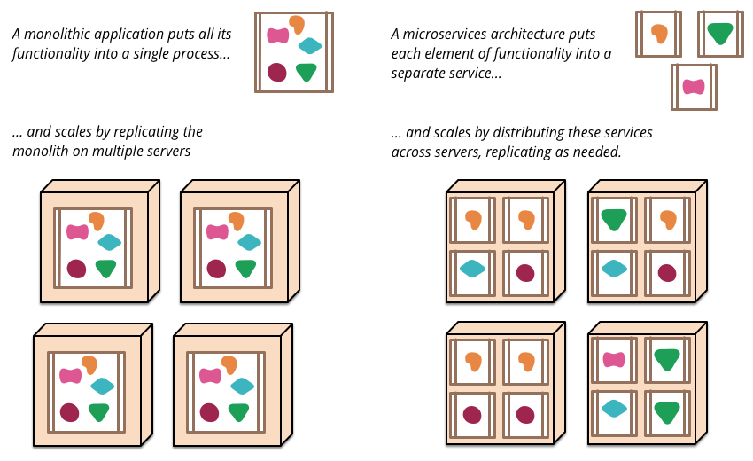
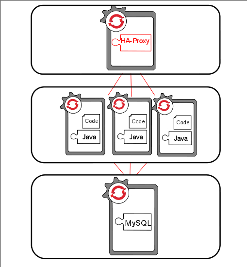

Microservices and You: the Straight Dope
http://bit.ly/sipmicro
Presented by:
Steven Pousty
@TheSteve0 on Twitter, IRC, Ingress, SmugMug, Skype, and Github
Agenda
- Microservices: Pros and Cons
- See it in action
Assumptions
- You understand THE WEB
- You have written a web application with backend services
Excuse me while I fire up my demo
Let's Talk Microservices
Fowler has a page
THERE ARE NO REQUIREMTNS FOR LANGUAGE OR APP SERVERS!
Very little talk of any technology


Hard Parts
Hardest is political/people
How do you test, deploy and manage
Untangling existing apps
IT IS NOT RIGHT FOR ALL APPLICATIONS
Tools to help
- PaaS
- External Services in a (Private/Public) Cloud
- Microframeworks (JAX-RS, Sinatra, Flask...)
- API Generators
Benefits
- Easier Maintenance
- Easier Communication
- More Team Autonomy
- More Automation of Grunt Work
Clear Boundaries Infinite Possibilities
Example of Scaling
OpenShift Scaling
Scaling hints
- Avoid sessions
- Loosely couple your pieces
- Design for retries and small pieces failing
- Use the architecture of the web for you
- Use a platform can scale your load automatically
Enough talk - back to the demo
Let's wrap it up
- Microservices has benefits with cloud type applications
- These patterns give more flexibility, resiliance, and capacity
- Used OpenShift to code rather than manage servers
- Used AppDynamics to monitor and improve our application
- Used Blazemeter to drive and test all our services
- Used IronMQ as our message queue to provide loose coupling
- Used LogEntries to centralize logging